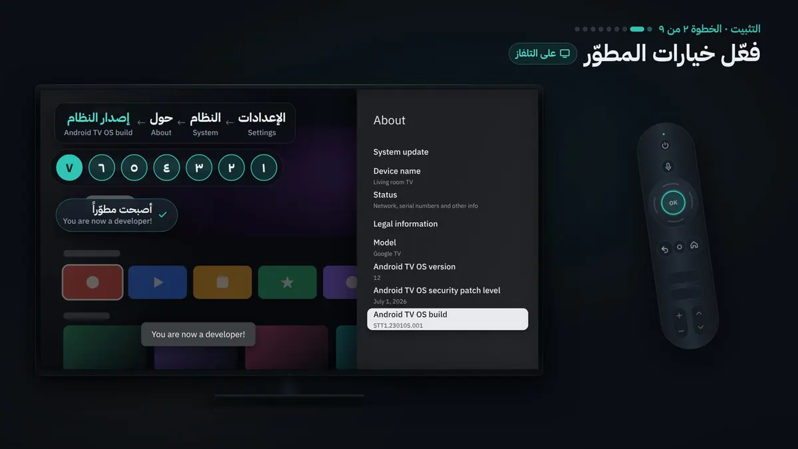
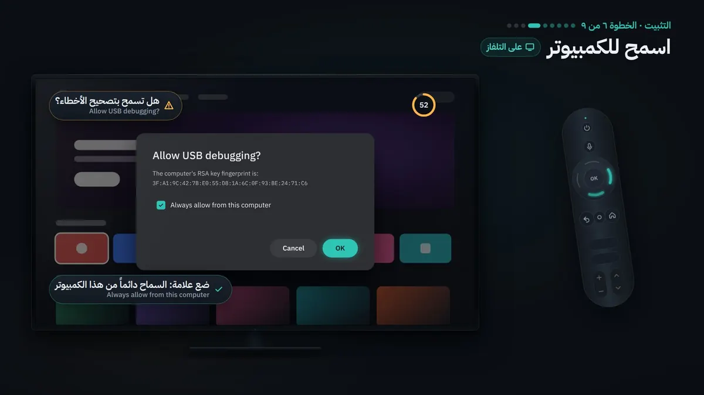
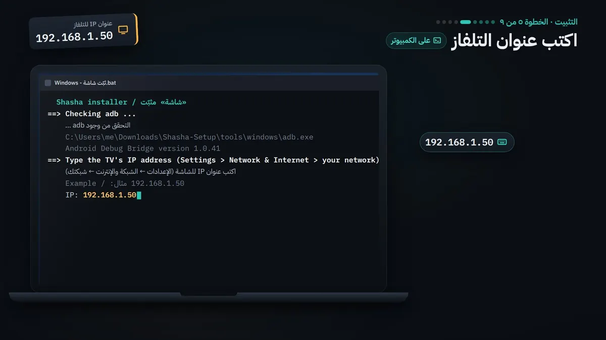
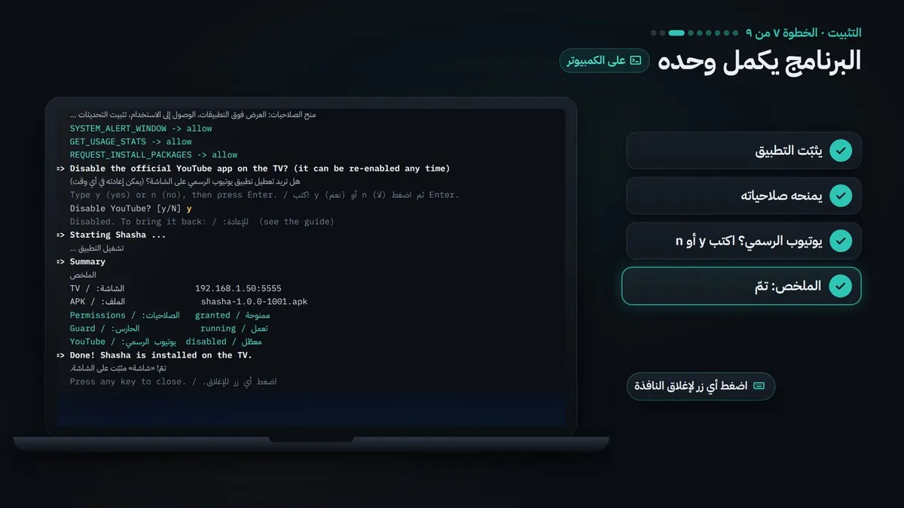

تطبيق أندرويد مجاني · للتلفاز والجوال · عربي وإنجليزي
شاشة
يوتيوب هادئ لتلفاز البيت: بلا إعلانات ولا تسجيل دخول، وبحماية كاملة للأطفال. لكل طفل ملف لا يرى فيه إلا القنوات التي تسمح بها، بوقت يومي ومواعيد محددة. ويُدار كله بالريموت أو من جوالك.
افتح هذه الصفحة على جوالك واضغط الزر، ثم اتبع ثلاث خطوات. تطبيق الجوال للمشاهدة على الجوال؛ أما التحكم في التلفاز فصفحة تفتحها من رمز QR في إعدادات «شاشة» على التلفاز.
آخر نشر: 2026-10-24. كل الملفات موقّعة بمفتاح الإصدارات نفسه، فتُثبَّت فوق النسخة السابقة وتبقى البيانات.
التثبيت
التثبيت خطوة بخطوة
مرة واحدة فقط. بعدها يتحدّث التطبيق من داخله.
على الجوال 3 خطوات
نزّل الملفمن زر «نزّل تطبيق الجوال» في هذه الصفحة، على جوالك نفسه. (وهو أيضاً في «مجلد Phone» داخل حقيبة التثبيت.)
افتحهمن الإشعار أو تطبيق الملفات أو المتصفح. سيقول أندرويد إن التثبيت من هذا المصدر غير مسموح: اضغط «الإعدادات» وفعّل السماح من هذا المصدر (Install unknown apps) للتطبيق الذي فتحت منه الملف. مرة واحدة فقط.
ثبّتهارجع واضغط «تثبيت»، ثم «فتح». يعمل على أندرويد 8 أو أحدث.
للتحديث لاحقاًالإعدادات ← فحص التحديثات ← نزّل وثبّت. قد يطلب النظام تأكيدك، ومرة واحدة يطلب السماح بالتثبيت.
على التلفاز نحو ربع ساعة
تحتاج التلفاز والريموت، وحاسوباً (ويندوز أو ماك أو لينكس)، والاثنان على شبكة البيت نفسها.
نزّل حقيبة التثبيت الحاسوبمن زر «حقيبة التثبيت» أعلاه، ثم فك الضغط. ويندوز: الزر الأيمن ← Extract All. ماك: انقر مرتين. لا تنقل أي ملف من المجلد.
فعّل خيارات المطوّر التلفازSettings ← System ← About، واضغط OK سبع مرات على Android TV OS build حتى تظهر You are now a developer!
فعّل تصحيح الأخطاء التلفازSettings ← System ← Developer options ← فعّل USB debugging، وNetwork debugging إن وجدته.
اعرف عنوان التلفاز التلفازSettings ← Network & Internet ← اسم شبكتك ← IP address (وبالسلك: Ethernet). أربعة أرقام بينها نقاط، مثل 192.168.1.50.
شغّل المثبّت الحاسوبويندوز: انقر مرتين على «Windows - ثبّت شاشة» (إن ظهر التحذير الأزرق: More info ← Run anyway). ماك: انقر مرتين على «Mac - ثبّت شاشة» (إن رفضه: System Settings ← Privacy & Security ← Open Anyway). لينكس: bash install-linux.sh. ثم اكتب عنوان التلفاز.
اسمح للحاسوب التلفازتظهر Allow USB debugging?: ضع علامة على Always allow from this computer ثم OK، خلال 60 ثانية.
انتظر، المثبّت يكمل وحده الحاسوبيكتب اسم التلفاز وطرازه، ويثبّت «شاشة» ويمنحه صلاحياته، ويسألك هل تطفئ يوتيوب الرسمي (y أو n)، ثم يكتب «تمّ!».
أول تشغيل التلفاز«شاشة» يطلب رمز الوالدين، ثم ملفك، ثم ملف طفلك.
اربط جوالك (اختياري) الجوالفي «شاشة»: الإعدادات ← الخادم المحلي ← رمز الاقتران QR، وامسحه بكاميرا الجوال.

الخطوة 2 على التلفاز

الخطوة 6 على التلفاز

الخطوة 5 على الحاسوب

الخطوة 7: «تمّ!»
أي تلفاز يناسب «شاشة»؟
يعمل
Google TV وAndroid TV بنظام أندرويد 7.1 أو أحدث، من أي ماركة: Sony وTCL وHisense وPhilips وXiaomi، وNvidia Shield وChromecast with Google TV وGoogle TV Streamer، وأجهزة العرض مثل XGIMI وNebula.
Amazon Fire TV بنظام Fire OS 6 أو أحدث: Fire TV Stick وFire TV Cube وتلفازات Fire TV.
لا يعمل
Samsung (Tizen) وLG (webOS)، وRoku وApple TV.
Fire TV بنظام Vega OS (أجهزة 2025 و2026 مثل Fire TV Stick 4K Select)، والقديمة بنظام Fire OS 5.
تلفازات بنظام خاص غير أندرويد: Hisense (VIDAA) وPhilips (Titan OS) وPanasonic.
تلفازك ليس منها؟
يكفي جهاز صغير يوصل بمنفذ HDMI: Google TV Streamer أو Chromecast with Google TV أو Xiaomi TV Stick أو Fire TV Stick 4K أو Fire TV Cube.
ابحث عن Fire OS على الصندوق: بعض أجهزة 2025 و2026 بنظام Vega OS ولا تعمل.
Fire TVخيارات المطوّر: Settings ← My Fire TV ← Developer options (إن لم تجدها: About، واضغط OK سبع مرات على اسم الجهاز). فعّل ADB debugging، والعنوان في About ← Network. وفي Fire OS 6 يفعّل المثبّت وحده Apps from Unknown Sources لتعمل التحديثات بضغطة واحدة. وتجد «شاشة» لاحقاً في Your Apps ← See all.
Android TV الأقدم، وPhilips، وNvidia Shieldخيارات المطوّر من Settings ← Device Preferences ← About (في Philips: All settings ← Android settings ← Device Preferences ← About)، وفي Nvidia Shield فعّل Network debugging أيضاً. وفي بعض موديلات Google TV الأحدث Wireless debugging فقط: إن رفض التلفاز الاتصال عرض المثبّت الاقتران برمز من 6 أرقام. التفاصيل في الدليل.
نظامهما ليس أندرويد. لا تحتاج أن تغيّر التلفاز: وصّل به جهازاً صغيراً بنظام Google TV أو Fire OS في منفذ HDMI، واختر منفذه بزر Source، وثبّت «شاشة» عليه كأنه التلفاز.
كيف أحدّث؟
من داخل التطبيق: «الإعدادات ← فحص التحديثات». ضغطة واحدة تنزّل أحدث إصدار وتثبّته، ويُغلق التطبيق لحظة ثم يُفتح من جديد. أو شغّل مثبّت الحاسوب من جديد بالملف الأحدث. بياناتك تبقى كما هي.
أين تُحفظ بياناتنا؟
كل شيء على التلفاز نفسه: الملفات والقنوات المسموحة والسجل والإعدادات. لا حسابات ولا تتبّع.
هل أستطيع إزالته؟
نعم: على التلفاز Settings ← Apps ← شاشة ← Uninstall (يمسح بياناته كلها). ولمن يعرف سطر الأوامر، المثبّت يقبل --undo: يعيد يوتيوب الرسمي ويسحب صلاحيات «شاشة» ويبقيه مثبّتاً.
كيف أتأكد أن الملف سليم؟
قارن بصمة SHA-256 للملف الذي نزّلته بالبصمة المكتوبة تحت زرّه. ويندوز (PowerShell): Get-FileHash shasha-tv.apk. ماك ولينكس: shasum -a 256 shasha-tv.apk.
شاشة هادئة لبيتك
ثبّته مرة واحدة، واختر قنوات أطفالك، واترك الباقي له.